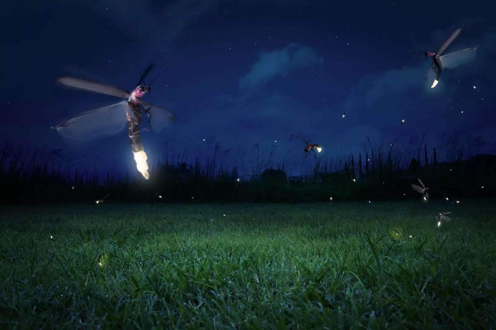
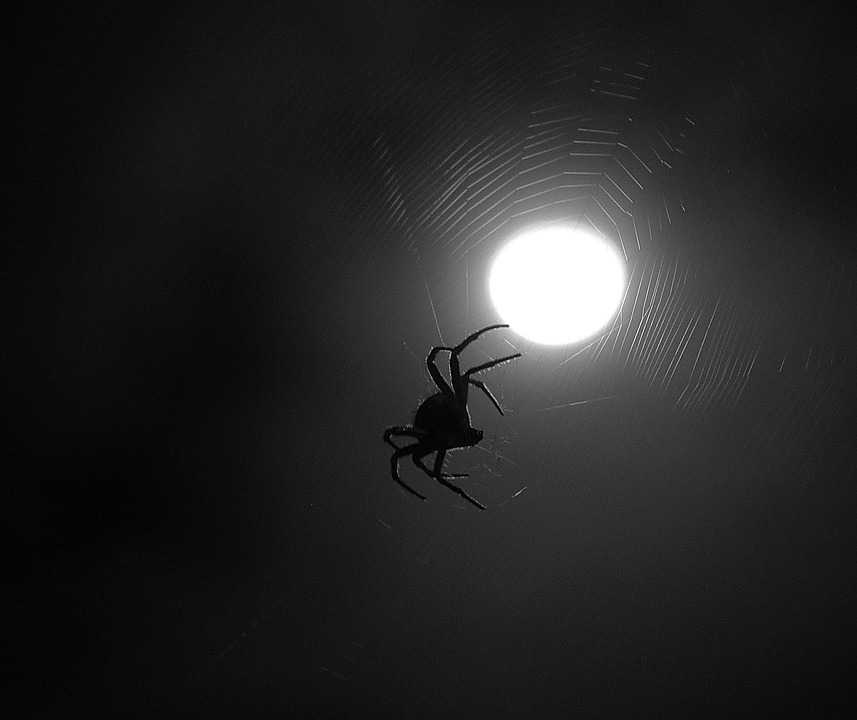
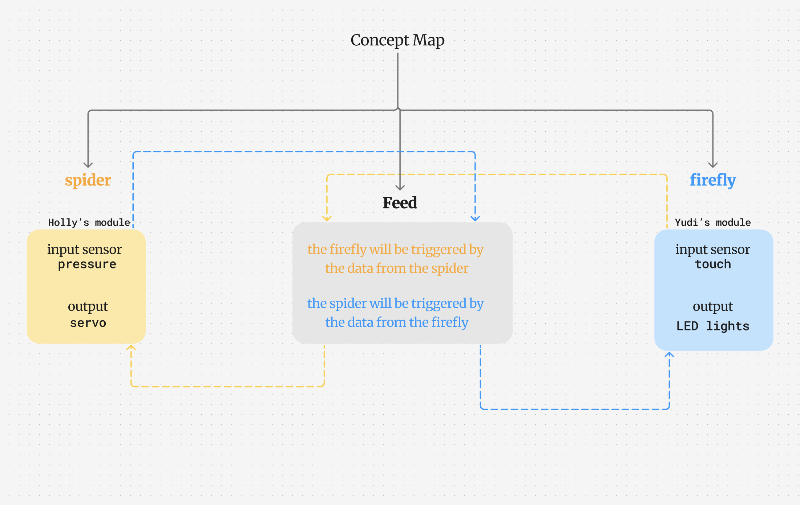
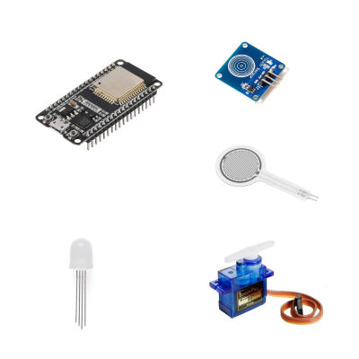
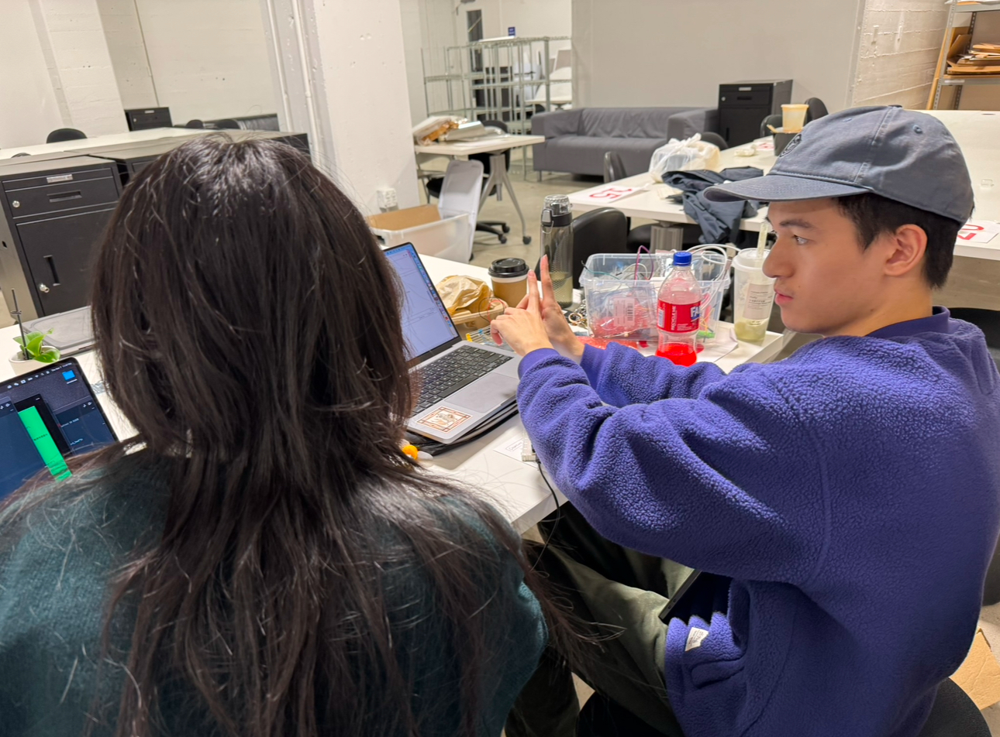
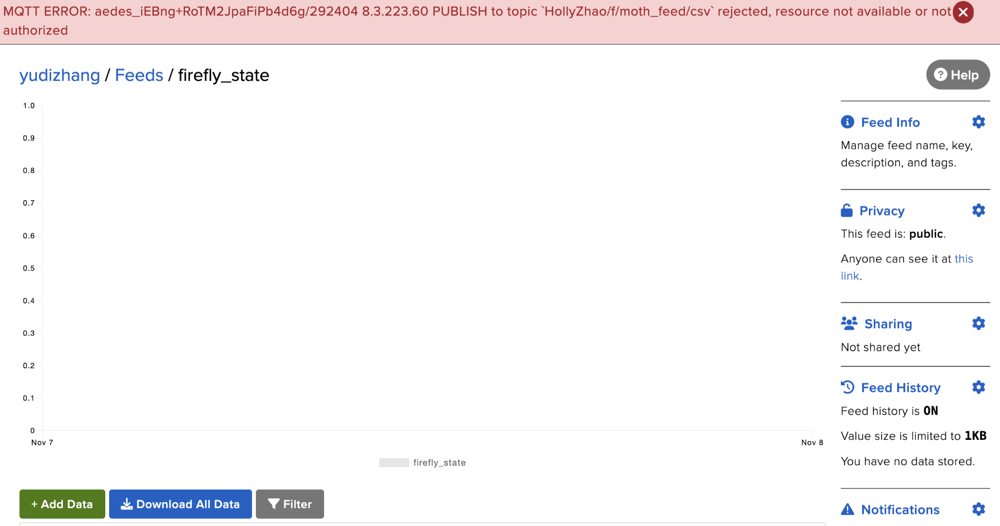

Simulation and Design
[Groupwork with Holly]
yudi zhang | Arduino + Adafruit IO Feed | project 3 | fall 2024
Introduction
Our group will build two electronic beings. Each will use sensors to perceive parts of their environment. We will connect them into a network so they can share what they detect and respond to each other.
[two electronic beings] module A: a firefly and Module B: a spider
[environment setting] summer late night time in the grove
[thinking on interaction & communication] The nighttime activities of fireflies will be sensed by spiders, and they will take corresponding actions
[visual referecne]


[imagine the scene]
- On quiet summer nights, people occasionally pass through this grove.
- People pass through bushes inhabited by fireflies and plants with spider webs.
- Fireflies are triggered by environmental factors and light up their tails;
- Spiders are also triggered by environmental factors and move on their webs;
[Concept Map]

Work Process
Setting & Process
[Core parts]
- 2 ESP32 for each module
- touch sensor
- 2 led light
- flexible pressure sensor (fps)
- servo

[Core parts]
- Yudi connects the touch sensor with 2 led lights with 1st ESP32 as module A —— a firefly;
- Holly connects the fps with the servo with 2nd ESP32 as module B —— a spider;
- Yudi and Holly create IO feed and testing;
- After the test was successful, Yudi and Holly created feeds belonging to modules A and B respectively, and tried to make them communicate with each other;
- With the help of Adam, Yudi and Holly completed the interactive requirements. Here are some records of the production process:

Final Result
Scene Snapshot

demo video
* Documentation For Errors and Debugging *
Component Selection:We want to show We spent a couple of days to research and imagine different kinds of bugs and their nature habits. and we try diferent knids of sensor to simulate them.Logic of :We spent a couple of days to research and imagine different kinds of bugs and their nature habits. and we try diferent knids of sensor to simulate them.- CHOP - MIDI IN: In order to avoid the MATH error, I tried to use MIDI IN. later I figured out the reason, I only can read channels like "ch1n60", instead of channels like "note#60 and velocity 90"; finally I got all my nodes works like this:
- CHOP - COUNT & EXPRESSION:Then I tried to connect each line to each key, I can not work with COUNT and EXPRESSION. I spent a couple of hours and I gave up. I went to p5js.
